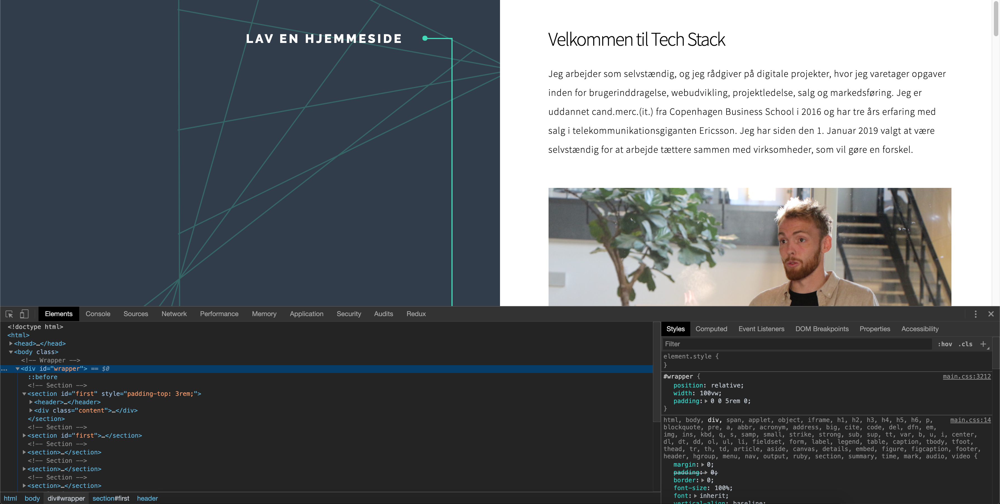

<!-- <!DOCTYPE HTML>
<html>
	<head>
		<title>Tech Stack</title>
		<meta charset="utf-8" />
		<link rel="icon" href="assets/favicon.ico" />
		<meta name="viewport" content="width=device-width, initial-scale=1, user-scalable=no" />
		<meta name="description" content="" />
		<meta name="keywords" content="" />
		<link rel="stylesheet" href="assets/css/main.css" />
	</head>
	<body class="is-preload">

		
			<div id="wrapper">

				
					<section id="first" style="padding-top: 3rem;">
						<header>
							<h1>Tech Stack</h1>
							<p style="color: #ffffff;">Udfører opgaver inden for programmering og produktudvikling af digitale løsninger.</a></p>
						</header>
						<div class="content">
                            <h1 style="color: #000000; font-weight: 300; font-size: 2rem;">Søg tilskud på 100.000 kr. til rådgivning med SMV:Digital</h1>
							<p>Jeg arbejder som selvstændig, og er godkendt som rådgiver på <a href="https://www.smvdigital.dk" target="_blank" style="color: #000000;">SMV:Digital</a>, hvor jeg med mine tre års erfaring fra internationalt salg og forretningsudivkling i telekommunikationsgiganten Ericsson, rådgiver virksomheder om digital omstilling af salgsprocesser ved anvendelse af Customer Relationship Management (CRM) systemer og systematisk kundebearbejdning.</p>
							<p>Find min rådgiverprofil på <a href="https://ehmidt.dk/raadgivere/soeg_raadgiver.asp" target="_blank" style="color: #000000;">SMV:Digital</a> ved at søge på Tech Stack IVS.</p>
							<span class="image main" style="margin-bottom: 0.5rem!important;"></span>
							<p style="text-align: center; font-style: italic; margin: 0">Mikkel afholder workshop på DTU Skylab i entreprenørprogrammet Ignite.</p>
						</div>
					</section>

                   
					<section id="first">
						<header>
							<h2>Ansøgningskrav, ansøgningsproces og tildelingskriterier</h2>
						</header>
						<div class="content">
							<h1 style="color: #000000; font-weight: 300; font-size: 2rem;">Puljen åbner for ansøgninger den 20. April 2020</h1>
							<p>SMV:Digital programmet er etableret med regeringens Strategi for Danmarks Digitale Vækst. Puljen af 100.000 kr.-tilskud til digital omstilling udgør 28,25 mio. kr. og er blevet forhøjet i 2020 som følge af en ekstra bevilling på 20 mio. kr. tildelt fra Danmarks Erhvervsfremmebestyrelse.</p>
							
							<p>Ansøgningsfristen for SMV:Digital åbner den 20. April 2020</p>

							<p>&#9989; Installer Visual Studio Code<br />&#9989; Opret en projektmappe<br />&#9989; Åben projektmappen i Visual Studio Code<br />&#9989; Opret en fil og navngiv den index.html</p>
							
						</div>
                    </section>
                    
                   
					<section>
						<header>
							<h2>Del 2 - Værktøjer</h2>
						</header>
						<div class="content">
                            <h1 style="color: #000000; font-weight: 300; font-size: 2rem;">Visual Studio Code</h1>
                            <p>Jeg bruger <a style="color:#000000" href="https://code.visualstudio.com/download" target="_blank">Visual Studio Code</a> som teksteditor for min kode. Du kan også vælge at bruge Atom, Sublime eller WebStorm. Du skal bruge en teksteditor til at holde styr på dine projektfiler.</p>
                            <p>Lav en mappe på din computer, hvor du gerne vil opbevare dine projekter. Jeg har en mappe som hedder 'dev' og inde i den mappe har jeg forskellige mapper med mine projekter.</p>
                            <p>I Visual Studio Code skal du trykke på 'New file' og gemme den i en mappe med navnet index.html eller trykke på 'Open folder' for at åbne en mappe og oprette filen i projektet.</p> 
							<p>&#9989; Installer Visual Studio Code<br />&#9989; Opret en projektmappe<br />&#9989; Åben projektmappen i Visual Studio Code<br />&#9989; Opret en fil og navngiv den index.html</p>
							
							<p>På billedet kan du se mit projekt 'techstack-web'.</p>
                            <span class="image main"><a href="images/lav-en-hjemmeside/visual-studio-code.png"></a></span>
							<h1 style="color: #000000; font-weight: 300; font-size: 2rem;">Google Chrome</h1>
                            <p>Jeg bruger <a style="color:#000000" href="https://www.google.com/intl/da/chrome/" target="_blank">Google Chrome</a> som min browser. Det gør jeg fordi at den har nogle gode udviklerværktøjer, som kan anvendes til at inspicere og undersøge hjemmesider.</p>
                            <p>Når du er på en hjemmeside i Google Chrome, kan du højreklikke og trykke 'Vis sidens kilde' for at se hjemmesidens kode eller 'Undersøg' for at tilgå udviklerværktøjerne i browseren.</p>
                            <p>Tryk på 'Undersøg' og under 'Elements' kan du se alle HTML komponenter som hjemmesiden består af og når du vælger et HTML element kan du se stylingen med CSS under 'Styles'.</p>
                            <span class="image main"></span>
                            <h1 style="color: #000000; font-weight: 300; font-size: 2rem;">Git og GitHub</h1>
							<p>Nu kan det godt blive lidt kompliceret. Jeg bruger <a style="color:#000000" href="https://git-scm.com/downloads" target="_blank">Git</a>  som værktøj til versionskontrol og <a style="color:#000000" href="https://github.com/" target="_blank">GitHub</a>  til at opbevare koden for mine projekter. Så kan jeg dele koden til mit projekt med et <a style="color:#000000" href="https://github.com/mikkel4vild/techstack-web" target="_blank">link</a>.</p>
							<p>Først skal du oprette en bruger på GitHub og lave et nyt 'repository' med det samme navn som din mappe på computeren. Mit projekt hedder 'techstack-web' og det er 'Public'.</p>
							<span class="image main"></span>	
							<p>Når du har oprettet et projekt på GitHub kan du anvende Git kommandoer i 'command prompt' med Windows og 'Terminal' med macOS til at uploade dine projektfiler til GitHub.</p>
							<p>Jeg bruger 'Terminal' med macOS, hvor jeg bruger kommandoen for 'change directory' til at komme ind i min mappe, og følger vejledningen på GitHub for at tilknytte et 'repository':</p>
							<p style="font-style: italic;">cd dev/techstack-web<br />git init<br />git add .<br />git commit -m "første commit"<br />git remote add origin https://github.com/MIKKEL4VILD/techstack-web.git<br />git push -u origin master</p>
							<p>Du vil blive bedt om at logge ind på GitHub når du laver et 'git push'.</p>
							<p>Username for 'https://github.com': Skriv dit brugernavn<br />Password for 'https://brugernavn@github.com': Skriv dit password</p>
							<p>Så vil dine projektfiler blive uploadet til dit projekt på GitHub med Git og du kan finde koden for min hjemmeside <a style="color:#000000" href="https://github.com/mikkel4vild/techstack-web" target="_blank">på GitHub</a>.</p>
							<span class="image main"></span>	
							<p>Nu skal vi i gang med at lave din hjemmeside.</p>
						</div>
                    </section>
                    
                    
					<section>
						<header>
							<h2>Del 3 - Din hjemmeside</h2>
						</header>
						<div class="content">
                            <h1 style="color: #000000; font-weight: 300; font-size: 2rem;">HTML er strukturen</h1>
							<p>HTML anvendes til at strukturere indholdet på din hjemmeside gennem en syntaks som anvender tags, for eksempel 'h1' for overskrift, 'p' for paragraf, 'a' for links og 'img' for billeder.</p>
							<p>På hjemmesiden <a style="color:#000000" href="https://www.w3schools.com/html/default.asp" target="_blank">w3schools</a> kan du finde en god oversigt over alle HTML tags.</p>
                            <h1 style="color: #000000; font-weight: 300; font-size: 2rem;">CSS er præsentationen</h1>
                            <p>Hvad er CSS og hvad skal det bruges til.</p>
                            <h1 style="color: #000000; font-weight: 300; font-size: 2rem;">JavaScript er interaktionen</h1>
                            <p>Hvad er JavaScript og hvad skal det bruges til.</p>
						</div>
                    </section>
					
					
					<section>
						<header>
							<h2>Del 4 - Hosting</h2>
						</header>
						<div class="content">
							<p>Omkring hosting af statiske hjemmesider på Netlify.</p>
						</div>
					</section>
					
                   
					<section>
						<header>
							<h2>Del 5 - Køb et domæne</h2>
						</header>
						<div class="content">
							<p>Omkring domæner, hostingudbydere, DNS og SSL.</p>
						</div>
					</section>

					
					<section>
						<header>
							<h2>Næste skridt</h2>
						</header>
						<div class="content">
							<p>I denne serie har vi gennemgået hvordan du kan lave en hjemmeside og jeg håber du er kommet online med den. Du skal være velkommen til at kontakte mig hvis du har spørgsmål.</p>
							<p>Fortsat god arbejdslyst med din hjemmeside.</p>
							<p>Bedste hilsener,<br />Mikkel Wessel Nielsen</p>
						</div>
						<footer>
							<ul class="items">
								<h3>Connect med mig</h3>
								<li>
									<ul class="icons">
										<li><a href="mailto:mikkelwessel2@gmail.com" target="_blank" class="icon solid fa-envelope"><span class="label">Email</span></a></li>
										<li><a href="https://www.linkedin.com/in/mikkel-wessel-nielsen/" target="_blank" class="icon brands fa-linkedin-in"><span class="label">LinkedIn</span></a></li>
										<li><a href="https://github.com/mikkel4vild" target="_blank" class="icon brands fa-github"><span class="label">GitHub</span></a></li>
										<li><a href="https://tech-stack-talk.slack.com/" target="_blank" class="icon brands fa-slack"><span class="label">Slack</span></a></li>
									</ul>
								</li>
							</ul>
						</footer>
					</section>
			</div>

			<script src="assets/js/jquery.min.js"></script>
			<script src="assets/js/jquery.scrolly.min.js"></script>
			<script src="assets/js/browser.min.js"></script>
			<script src="assets/js/breakpoints.min.js"></script>
			<script src="assets/js/util.js"></script>
			<script src="assets/js/main.js"></script>
			
	</body>
</html>
-->